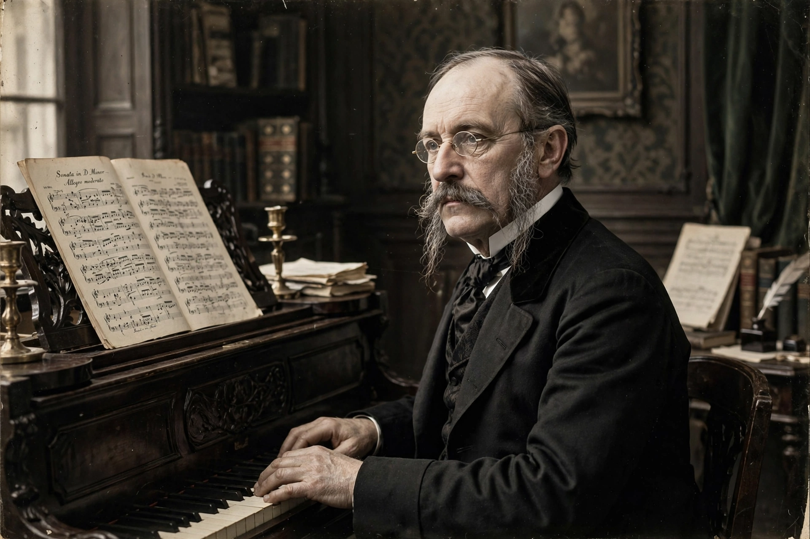

Arthur Sullivan
| Sir Arthur Sullivan | |
|---|---|
 | |
| Born | 13 May 1842, Lambeth, London, England |
| Died | 22 November 1900 (aged 58), Westminster, London |
| Occupation | Composer, conductor, organist |
| Notable works | Savoy operas with W. S. Gilbert; "Onward, Christian Soldiers"; The Lost Chord |
Sir Arthur Seymour Sullivan (13 May 1842 – 22 November 1900) was an English composer. He is best known for his long collaboration with the librettist W. S. Gilbert, producing fourteen comic operas — the Savoy operas — including H.M.S. Pinafore, The Pirates of Penzance and The Mikado. His works also include 24 operas in total, 11 major orchestral works, ten choral works and oratorios, two ballets, and numerous hymns and songs, including "Onward, Christian Soldiers" and "The Lost Chord".
Early life and career
The son of a military bandmaster, Sullivan sang in the Chapel Royal choir and won the first Mendelssohn Scholarship, studying at the Royal Academy of Music and at the Leipzig Conservatory. His graduation music for Shakespeare's The Tempest (1861) made his reputation in London. Through the 1860s he supported himself as an organist and teacher while composing oratorios such as The Prodigal Son, a symphony, and concertos.
Gilbert and Sullivan
Sullivan's first collaboration with Gilbert, Thespis (1871), was followed by Trial by Jury (1875), produced by Richard D'Oyly Carte. The pair's hits at the Opera Comique and then at Carte's purpose-built Savoy Theatre made them the most successful partnership in English musical theatre: The Sorcerer, H.M.S. Pinafore, The Pirates of Penzance, Patience, Iolanthe, Princess Ida, The Mikado, Ruddigore, The Yeomen of the Guard, and The Gondoliers. The relationship was often strained — Sullivan longed for grand opera, producing Ivanhoe (1891) — and effectively ended after The Grand Duke (1896).
Later life and honours
Sullivan conducted the Leeds Festival and the Philharmonic Society, and was knighted in 1883. Despite chronic ill health and a fondness for gambling and high society, he remained Britain's most famous living composer. He died in 1900 and was buried in St Paul's Cathedral.
See also
This article is a recreation written from memory for the muse-webcrawl project.